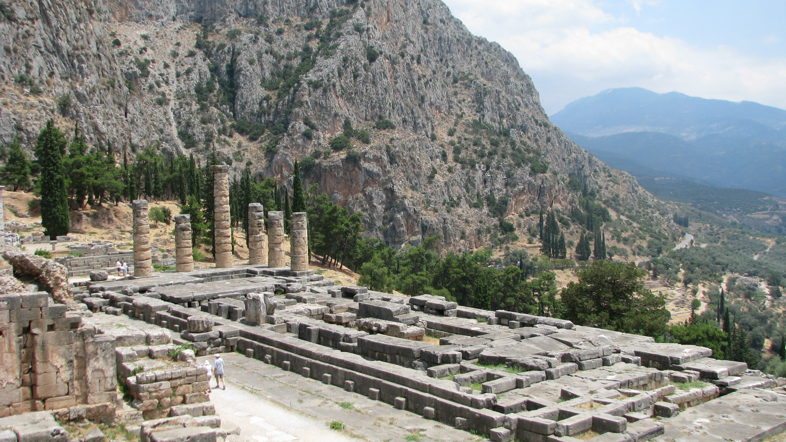

DELPHI

Delphi-Temple of Apollo
"I wish, in announcing that fortunate man Telesikrates as a bronze-shielded Pythian victor, to proclaim with the aid of the deep-bosomed Graces a crowning song for chariot-driving Kyrene.."
Pindar - Pythian Odes (For Telesikrates of Kyrene, winner race in armor, 474BC)
Delphi, located in upper central Greece, on multiple plateaux along the slope of Mount Parnassus, was the site of a major temple to Apollo, as well as the Pythian Games and the prehistoric oracle. The ancient sanctury, formerly also called Pytho, grew rich as the seat of Pythia, the oracle who was consulted about important decisions throughout the ancient classical world. The ancient Greeks considered the centre of the world to be in Delphi, marked by the stone monument known as the omphalos (navel).
Apollo spoke through his oracle Pythia. She had to be an older woman of blameless life chosen from among the peasants of the area. Alone in an enclosed inner sanctum, she sat on a tripod seat over an opening in the earth (the "chasm"). Intoxicated by the vapours, the sibyl would fall into a trance, allowing Apollo to possess her spirit. In this state she prophesied. While in a trance the Pythia "raved" – probably a form of ecstatic speech – and her ravings were "translated" by the priests of the temple into elegant hexameters.
The oracle could not be consulted during the winter months, for this was traditionally the time when Apollo would live among the Hyperboreans. Dionysus would inhabit the temple during his absence.
The Delphic oracle exerted considerable influence throughout the Greek world, and she was consulted before all major undertakings including wars and the founding of colonies. She also was respected by the Greek-influenced countries around the periphery of the Greek world, such as Lydia, Caria, and even Egypt.
The Pythian Games were founded in Delphi sometime in the 6th century BC and featured competitions for art and dance. The art and dance competitions pre-dated the athletic portion of the games, and were said to have been started by Apollo after he killed Python and set up the oracle at Delphi.
The historical timeframe of the Pythian Games started in 582 BC, when the administration of the Games was handed over to the Delphic Amphictyony, a council of twelve Greek tribes, at the end of the First Sacred War.
Preparations for the games began six months prior. Nine citizens from Delphi, called Theoroi, were sent to all Greek cities to announce the beginning of the games in order to attract athletes, as well as to declare the period of the Sacred Truce (Hierominia), aiming at protecting not only the Theoroi and the athletes who travelled to Delphi, but also the temple of Apollo itself. If a city was involved in armed conflict or in robberies during that period, its citizens were forbidden to enter the Sanctuary, participate at the games, or consult the Oracle. At the same time, the truce allowed the Amphictyony to focus on preparing for the games, which included restorations for all structures of the Sanctuary, from the temples to the streets and fountains. Scores of people flocked out of entire Greece, bringing in substantial revenue to the city. (Wikipedia)

Delphi Stadium

Athenian Treasury

The Tholos at Delphi